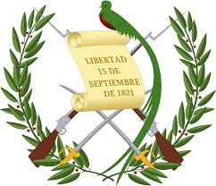
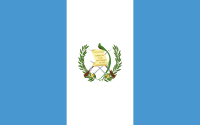
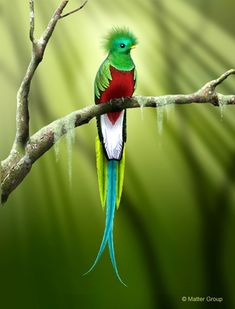
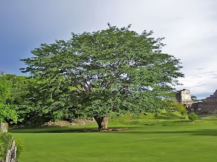
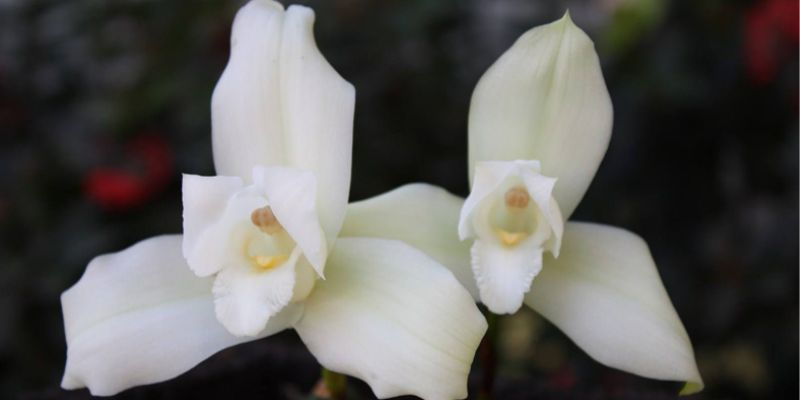
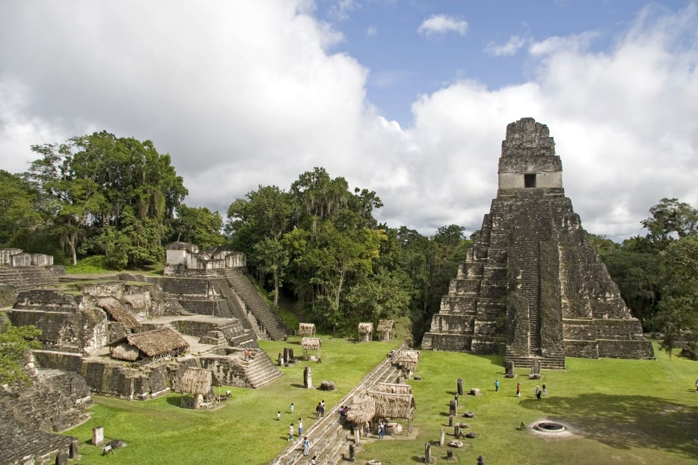
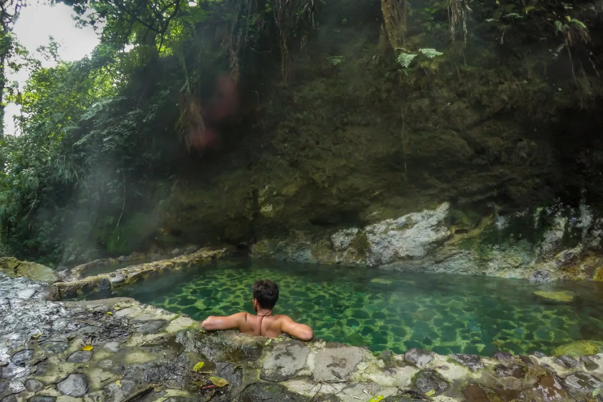

Simbolos Patrios
ESCUDO

La versión actual fue creada en 1871, en el gobierno de Miguel García Granados, por el ciudadano suizo
Juan Bautista Brener.
El símbolo patrio cuenta con cinco elementos en total, entre ellos rifles, que se refieren a la fuerza,
espadas enfatizando la justicia y soberanía, laureles por la victoria, el pergamino que anuncia la fecha
de independencia y el quetzal, que simboliza la libertad.
BANDERA

Es el más antiguo de los símbolos patrios, al pasar de los años ha cambiado varias veces su forma,
tamaño, color y escudo.
En 1871, el entonces presidente de la República de Guatemala, el general Miguel García Granados, decretó
la creación y determinó los colores en, azul celeste y blanco. El celeste representa el océano Pacífico,
mar Caribe y océano Atlántico. Asimismo, simboliza la fortaleza, justicia y lealtad. El blanco
representa la pureza, el respeto, la fe, integridad y la paz de la nación.
AVE

El quetzal, conocido como el ave nacional, de hermoso plumaje, desde 1871. Simboliza la libertad, la
autonomía e
independencia de la nación. Anida en los bosques nubosos de Guatemala como las Verapaces, mide
aproximadamente de 30 a 38 centímetros. El quetzal macho posee larga cola, la cual es importante para el
cortejo.
ARBOL

La ceiba, econocida como árbol nacional mediante el Acuerdo Gubernativo del 8 de marzo de 1955. El nombre
científico es Ceiba pentandra, catalogado como árbol nativo de América. Puede llegar a medir más de 50
metros de altura y su tronco rebasa los 3 metros de diámetro.
FLOR

Monja blanca, fue declarada como flor nacional de Guatemala por decreto presidencial del general Jorge
Ubico Castañeda
el 11 de febrero de 1934.
Su característica hace referencia a que en el centro tiene un pequeño tallo que semeja a una monja
rezando, por eso fue bautizada como monja blanca.
Crece en musgos o helechos de Alta Verapaz, los Cuchumatanes y montes de Izabal y Quiché. Además,
florece entre octubre y febrero, y su flor permanece de cuatro a seis semanas.
Historia de Guatemala
En el siglo xix, los criollos de la Capitanía General de Guatemala lograron su independencia del Imperio
español y la región pasó a llamarse Federación Centroamericana, la cual se anexó un tiempo al imperio de
Agustín de Iturbide en México. Tras la separación de México se iniciaron las guerras entre los conservadores
—es decir, los criollos de mayor abolengo y que vivían en la capital de la federación, conocidos también
como Clan Aycinena, y el clero regular de la Iglesia católica— y los liberales, que eran criollos de menor
categoría que se dedicaban a la agricultura a gran escala y vivían en el resto de la Capitanía General. La
lucha dio lugar a la desintegración de la Federación Centroamericana, de la que emergieron las cinco
repúblicas de Centro América, entre ellas la actual Guatemala.
Un Estado de la Federación Centroamericana gobernado por conservadores como Mariano Aycinena y luego por el
liberal Mariano Gálvez, la moderna República de Guatemala se fundó el 21 de marzo de 1847, durante el
gobierno conservador del general Rafael Carrera, y de esta forma empezó a tener relaciones diplomáticas y
comerciales con el resto de naciones del orbe. Bajo el mando de Carrera, Guatemala resistió todos los
intentos de invasión de sus vecinos liberales.
En 1871, seis años después de la muerte de Carrera, triunfó la Reforma Liberal y se establecieron regímenes
liberales de corte dictatorial. El café se convirtió en el principal cultivo del país. En 1901, durante el
gobierno del licenciado Manuel Estrada Cabrera, se inició la intromisión en los asuntos de estado de
corporaciones norteamericanas, como United Fruit Company (UFCO), la principal empresa del país. Guatemala
pasó a convertirse en una República bananera, en donde los gobernantes eran colocados o retirados por la
UFCO, dependiendo de las necesidades económicas y de los que obtenía considerables concesiones. En 1944, en
medio de la Segunda Guerra Mundial, se produjo la revolución de octubre, que derrocó al régimen militar de
entonces e inició diez años de gobiernos electos que intentaron oponerse a la frutera e imponer reformas
sociales, pero fueron derrocados en 1954 cuando los intereses de la UFCO se vieron afectados por dichas
reformas. La contrarrevolución de 1954. Mantuvo algunas de las reformas de los regímenes revolucionarios,
incluyendo la dignificación del Ejército, pero volvió a proteger los intereses de la frutera norteamericana,
aduciendo que los regímenes revolucionarios eran comunistas. En 1960, en el marco de la Guerra Fría, se
inició la guerra civil y un período de inestabilidad política, con golpes de Estado y elecciones
fraudulentas. El conflicto armado dejó un saldo de más de 250.000 víctimas —entre muertos y desaparecidos—
según datos de la Comisión para el Esclarecimiento Histórico, según la cual más del 90 por ciento de las
masacres fueron cometidas por el Ejército de Guatemala y los grupos paramilitares progubernamentales. Tras
la transición a un sistema democrático en 1985, y luego de extensas negociaciones con la guerrilla, se logró
firmar los Acuerdos de Paz en 1996, empezó una nueva época en Guatemala.
Lugares turisticos que debes visitar si vas Guatemala
Tikal

Si te gusta la historia, no puedes perderte Tikal. Es un sitio arqueológico en el norte del país, en el
departamento de Petén, donde se encuentra la ciudad maya más grande y mejor conservada.
Los orígenes se remontan al año 400 a. C. y, durante los siglos siguientes, Tikal se convirtió en una de las
ciudades mayas más grandes y poderosas, llegando a su apogeo durante el Período Clásico (200-900 d. C.).
Alta Verapaz, Cobán, Semuc Champey

Los departamentos de Alta y Baja Verapaz son muy ricos en flora y fauna. A lo largo del camino se pueden
encontrar muchos lagos, montañas y cascadas. Un lugar perfecto para disfrutar del ecoturismo, las verapaces
ofrecen una gran concentración de reservas naturales, sistemas de cuevas y selvas tropicales.
En esta región destaca Semuc Champey, ubicado a unas dos horas de Cobán.
Xela, la segunda ciudad de Guatemala

La segunda ciudad del país por tamaño de la población, Quetzaltenango (comúnmente llamada Xela), ofrece una
variedad de paisajes, aguas termales y ríos. También es rodeada de montañas y volcanes.
Esta ciudad atesora su cultura y tradiciones ofreciendo una gran cantidad de iglesias, museos y plazas para
explorar. En los alrededores podrás explorar la Laguna de Chicabal, las fuentes Georginas (la de la foto) y
el pueblo de Salcajá.